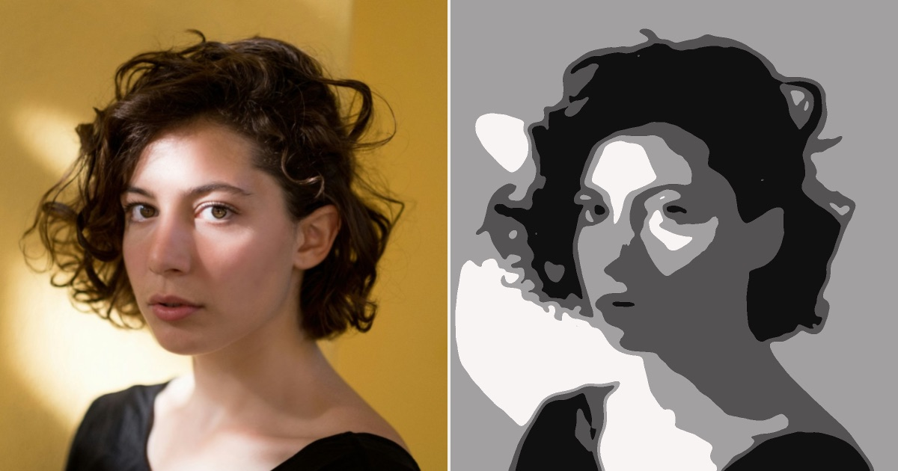

Askance
A free value study tool for painters. It flattens a photograph into two to seven values, spaced the way the eye reads them, so you can see the shapes light actually makes.
Compare it with the photograph in a split view, lay a drawing grid over it, read each value off a Munsell scale, and export or print it at 300 dpi. Works on your phone, installs as an app, and keeps working with no signal.

No account, nothing to pay. Your photos are never uploaded. Visits are counted anonymously with GoatCounter, without cookies.
Loading the app…